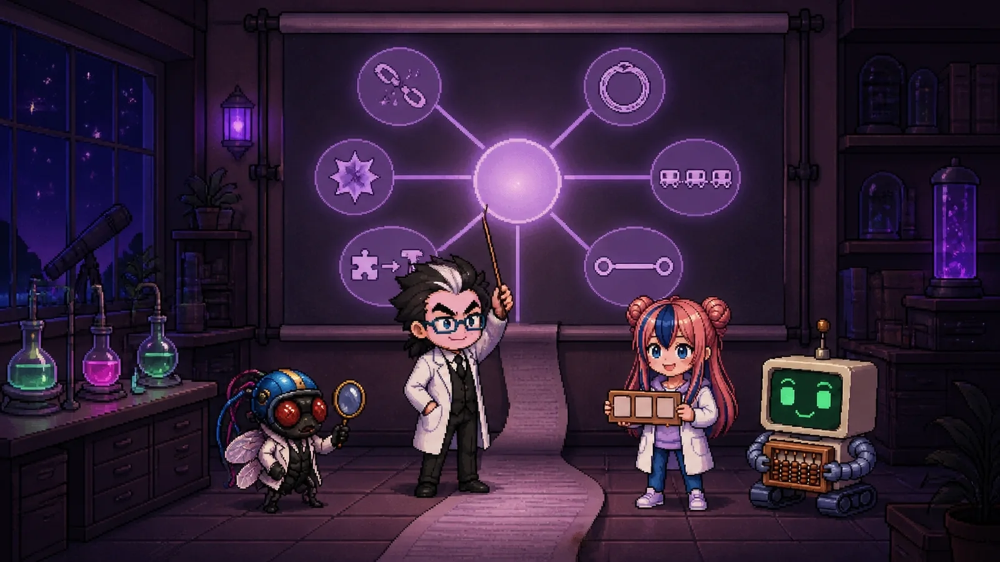

Bảng giải thích Phòng thí nghiệm AI · 07Ngữ pháp đúng rồi, vậy sao vẫn phải đọc hai lần? Chúng tôi diễn giải lại, cho phù hợp với độc giả Hàn Quốc, bài báo phân tích các đoạn hội thoại, câu trả lời lập trình và bài luận do 14 mô hình AI mới nhất viết. Đây là bản giải thích tương tác để bạn vừa đọc vừa tự chạy phần thực hành.
Sáu thói quen thường gặp trong văn bản AI, bằng chứng tìm được qua dịch ngược, phòng thí nghiệm phạt theo ký tự, và cả cuộc Đối đầu "cứ ngắn là hơn" với "tùy theo ngữ cảnh".
Mở bản giải thích →Clark, T. H., Martin, M. B., & Mahowald, K. (2026). Why is AI-generated language so hard to understand? arXiv preprint arXiv:2610.29162v1. https://arxiv.org/abs/2610.29162 (CC BY 4.0)
Bài báo chỉ phân tích văn bản tiếng Anh. Các ví dụ tiếng Hàn trong phần giải thích chỉ để minh họa, không phải kết quả đã đo.